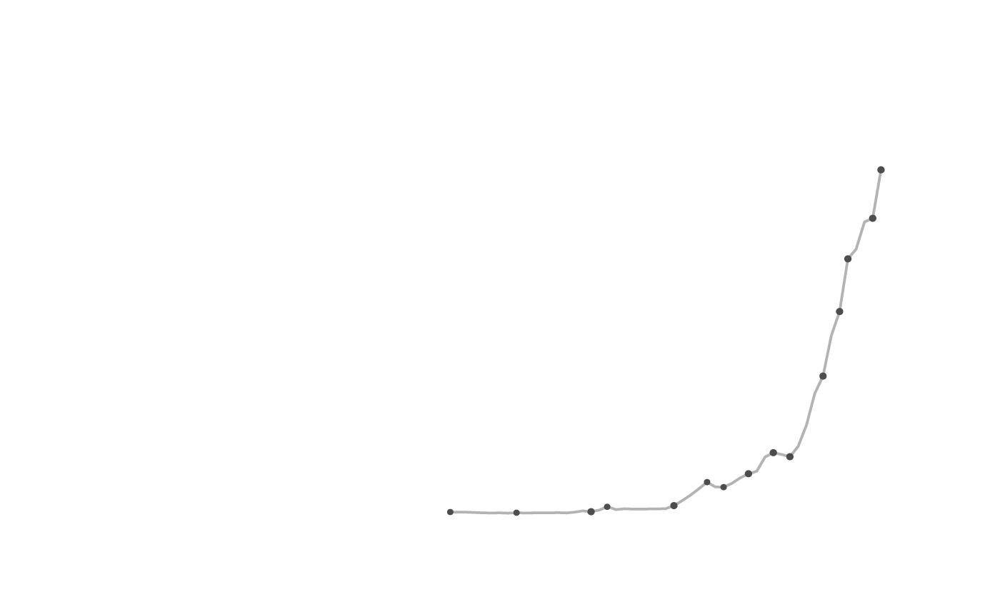
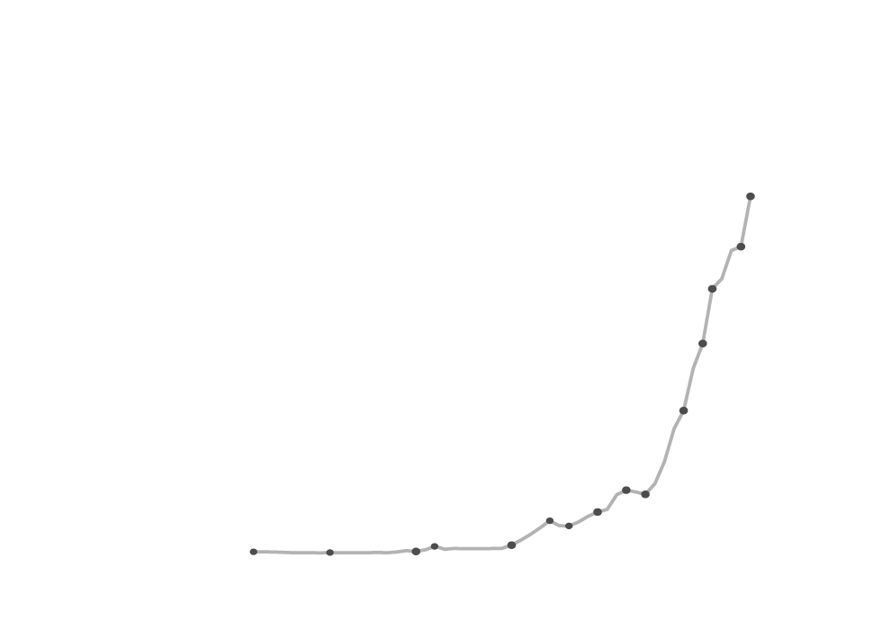
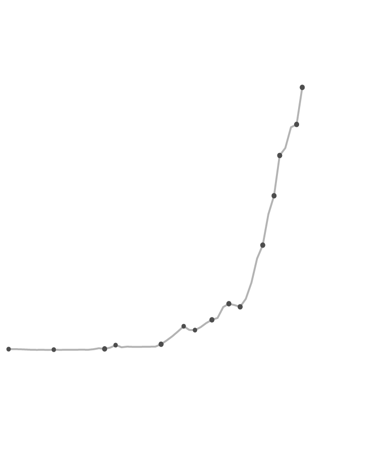

More than 3 million miles of natural gas pipelines move natural gas throughout the U.S. Yet, significant portions of the country — primarily rural, economically disadvantaged towns — lack such infrastructure, and therefore don't have reliable or cost-effective access to such energy. Virtual pipelines help address this gap. But, virtual pipelines are not subject to the same stringent oversight as traditional oil and gas systems, a regulatory gap that is often exploited.
Virtual pipelines use piecemeal infrastructure — trains, boats and trucks — as parts of a whole, allowing oil and gas to move and flow where it wasn't able to reach before. This method is cheaper than constructing pipelines, which is a lengthy and costly process, particularly in remote locations.
According to an analysis of the U.S. Energy Information Administration data, approximately 43% of natural gas was used to generate electric power, 29% for industrial use and an additional 16% for residential purposes, particularly heating.

U.S. LNG exports have skyrocketed in
the past decade
Data: U.S. Energy Information Administration

U.S. LNG exports have skyrocketed in
the past decade
Data: U.S. Energy Information Administration

U.S. LNG exports have skyrocketed in
the past decade
Data: U.S. Energy Information Administration
The closure and turmoil surrounding LNG movement through the Strait of Hormuz has sent prices soaring, the most disruptive event in the natural gas market since Russia's invasion of Ukraine. Natural gas supplies nearly 23% of global energy and is becoming even more valuable due to its ability to take different forms and move around easier, in some cases, than oil or other energy sources — abetted by a burgeoning network of virtual pipelines.
Extracted natural gas can be frozen, compressed, liquified and reheated, travelling an average of 506 miles, upwards of 1,864 miles, from its origin to locations within the U.S. But, the advent of resource-intensive data centers in remote locations along with the ongoing market squeeze is spurring on increased investment in virtual pipelines, which is expected to grow from $172 billion in 2025 to $1.92 billion by 2034, according to Fortune Business Insights.
Proposed pipeline systems, such as the Keystone XL and Dakota Access, have been successfully challenged by activists. The proliferation of virtual pipeline systems creates new methods to move natural gas in the absence of pipeline mega-projects. But, the piecemeal movement of natural gas is not subject to the regulatory oversight physical pipelines are, despite virtual pipelines potentially presenting even more harmful environmental risks.